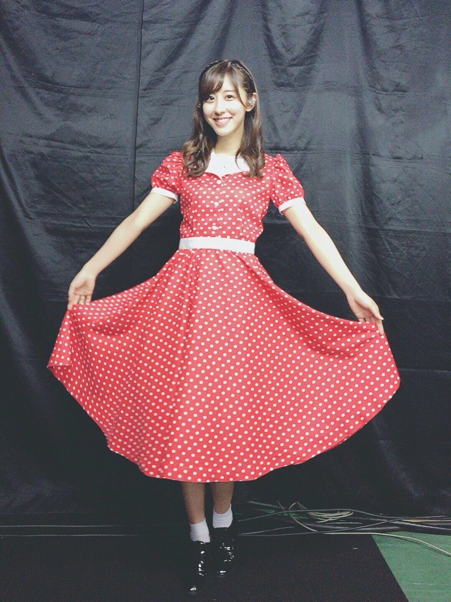
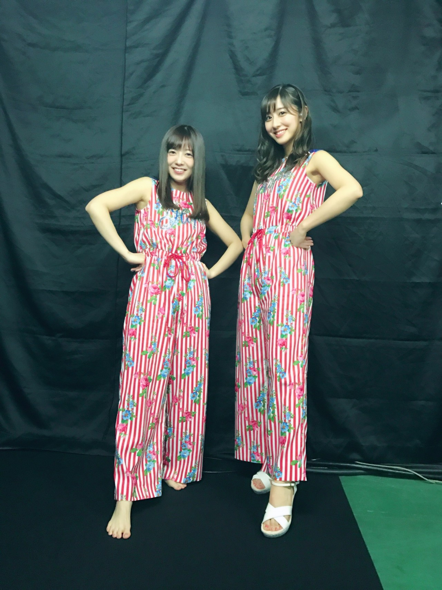
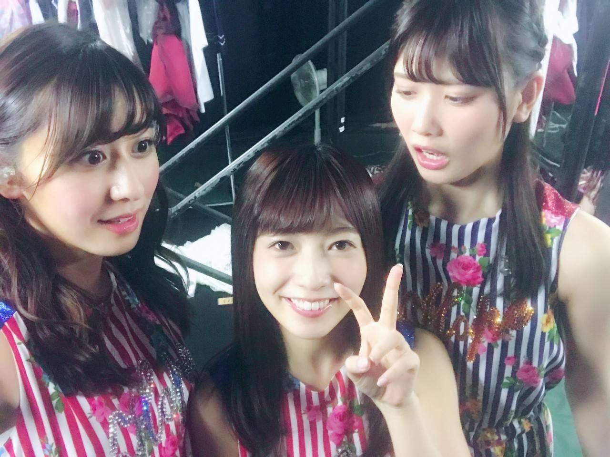

ちはるーむへようこそ
Birthdayライブでは沢山の新衣装が♡
今日はそれを少し紹介します◎
#chihaOOTD
Day1 Tenderdaysの衣装
ダイナーのウエイトレスさんの
イメージで、ポップに可愛く！

長いスカートに赤いドットがツボでした！
とっても可愛い。
Day3 傾斜するの衣装

優里と撮ったら巨人と小人みたいになっちゃったᐠ( ᐝ̱ )ᐟ笑
......ヒールのせい......かな？
ムービングステージという、
可動式の透明なステージで踊ったので
乃木坂には珍しいパンツスタイル！
私たちは赤でしたが、青スタイルもありました
可愛かった〜

優里の可愛さと小ささに驚く私たち。
------------------------------------------------♡
♬ ChihaMusic
「シェリー」尾崎豊さん
父母の影響で子供の頃から
ずっと聞いていた尾崎豊さん。
この悲しくて強い声が大好きです。
"シェリー いつになれば
俺は這い上がれるだろう"
この切なさといったら...
好きな女性に弱さを見せてしまう姿
自分を問う姿に胸打たれます。
尾崎豊さんの歌って凄いな。
どの時代でも響く。
今日もあったかかったね〜！
皆さん、あったかい日は
どんな風に過ごすのが好きですか？
おやすみ
斎藤ちはる